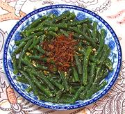

|
Long Bean SaladBurma | ||||
| Serves: Effort: Sched: DoAhead: |
4 slad ** 28 min Yes |
A very simple but flavorful salad that uses Southeast Asian pantry staples, These should be on hand in any kitchen doing SE Asian cooking. It can be served at room temperature as a salad, or warm as a side dish. | |||
|
12 1/4 ------- 4 2 2 1/2 ------- 2 |
oz c --- t t t t --- T |
Long Beans (1) Roasted Peanuts (2) -- Dressing Lime Juice Shallot Oil(3) Fish Sauce (4) Salt -- Garnish Fried Shallots (3) |
Do Ahead
|